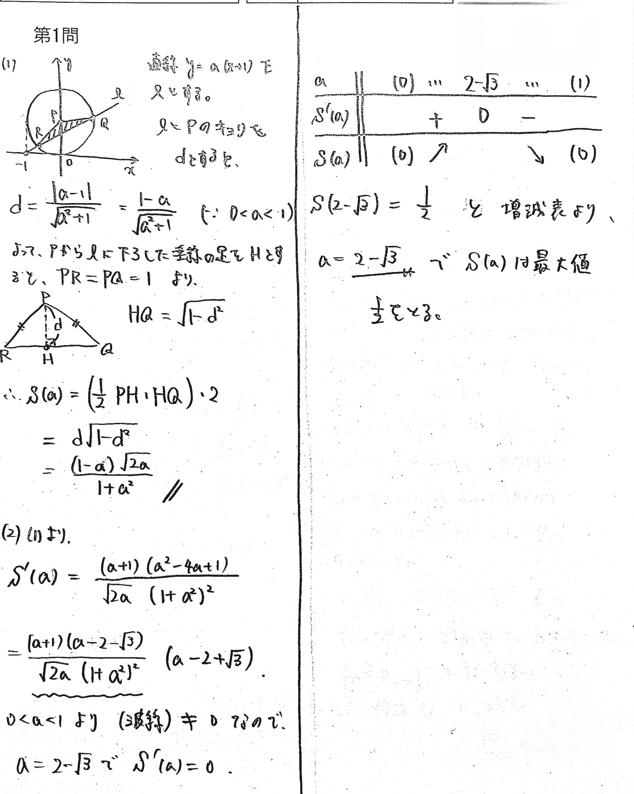

東大理系数学 2011-1
座標平面において，点 $P(0,1)$ を中心とする半径 $1$ の円を $C$ とする。$a$ を $0 < a < 1$ を満たす実数とし，直線 $y=a(x+1)$ と $C$ との交点を $Q,\ R$ とする。
(1) $\triangle PQR$ の面積 $S(a)$ を求めよ。
(2) $a$ が $0 < a < 1$ の範囲を動くとき，$S(a)$ が最大となる $a$ を求めよ。
解答例
(1)直線が円から切り取る弦の長さは、半径と点直公式で出すのが最適解。
(2)少しややこしい微分。
（※1：分母の形を見て $a=\tan\theta$ という置換を行うと $\color{cyan}S=\sqrt{(1-\sin2\theta)\sin2\theta}$ となるので、微分なしで解くことも可。相加相乗平均不等式の左辺そのものである。）
（※2： $d$ について最大を求めるという方法もある。おそらく最速。）

＞書くことが少ないので、計算は省略不要かもしれません。
＞最大値 $\frac12$ はわざわざ書かなくてもマルでしょう。
動く図解
問題の背景
xy平面上で円と直線が交わっている構図は、受験数学ではおなじみです。今回の問題の設定を使って色々遊んでみましょう。（※並び順は適当です）
・ $A(-1,0)$ とするとき、 $AR\cdot AQ$ の値が一定であることを示せ。
・$QR$ の中点を $H$ とするとき、 $H$ の軌跡を求めよ。
・$\triangle{PQR}$ が正三角形になる $a$ を求めよ。
初等幾何による計算の簡略化を疑い、最終手段として座標計算が選ばれるような姿勢が望ましいかと思います。
類題紹介
$xyz$ 座標空間において，点 $P(0,0,1)$ を中心とする半径 $1$ の球を $S$ とする。$a$ を $0 < a < 1$ を満たす実数とし，平面 $z=a(x+1)$ と $S$ の共有点がなす図形を $C$ とする。
(1) $P$ を頂点とし、$C$ を底面に持つ円錐の体積 $V(a)$ を求めよ。
(2) $a$ が $0 < a < 1$ の範囲を動くとき，$V(a)$ が最大となる $a$ を求めよ。
$$(1) \ V(a)=\frac{2\pi}{3}\frac{a(1-a)}{(a^2+1)^{\frac32}}\qquad (2) \ a=\frac{3-\sqrt5}{2}$$